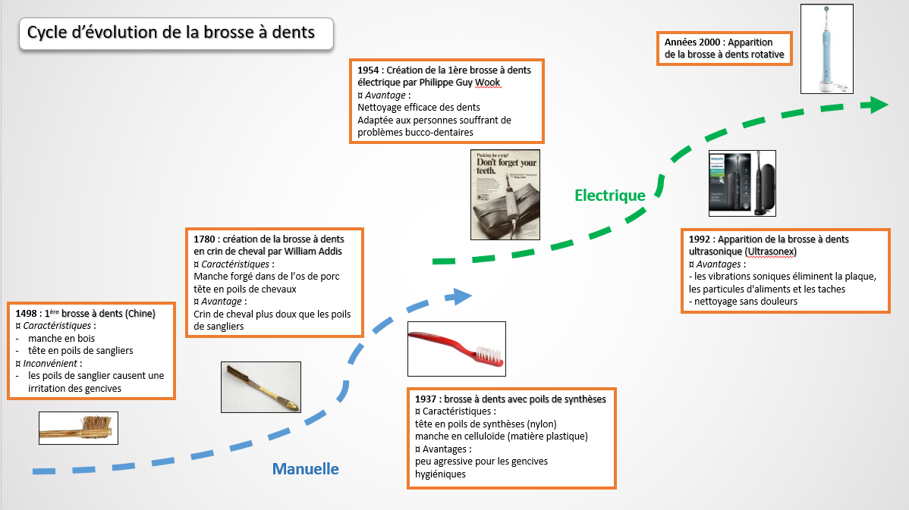

Descriptive part
The Innovation and Humanity course is composed of five modules that help us to
develop our management and human skills regarding project teams and our creativity.
Indeed, the first module concerns the social psychology for which
thoughts on manipulation and social influence at work have been conducted through practical cases and debates..
The second module, is about innovation. We discuss about the ways to perform
the conduct of our innovative project, the risk management, the timing and others notions.
The third module is about important concepts of team management
which will be useful to us in our engineer profession and during a career development
(skills of a good manager, motivation, carrer training...).
The fourth module is about the creativity methods applied to a chosen object.
Finally, the fifth module matches individual professional development in which
workshops on the job interview, the employment contract or the definition of his professional project were given. At the end,
we have the chance to participate in a mock interview.
In this page you will find all the information about the different modules and the practical works realized.
I detail the tasks performed, for what purpose.
I also highlight the knowledge and skills acquired during each module.
Social Psychology
A movie study case : 12 angry men
To illustrate a concrete case, we watched the film 12 angry men, for which a detailed analysis
was then carried out during a session. In this film, a young boy is accused of the murder of his father and faces the death
penalty. The jury of twelve men withdraws to deliberate. At the vote, eleven jurors vote guilty.
The juror who voted not guilty must justify his choice because unanimity is nost reached.
He explains that he has a doubt and that a man’s life deserves a few hours of discussion.
He then endeavoured to convince one by one the other eleven members of the jury.
Through this film, we were able to observe different strategies of argumentation and the force of persuasion that a man
can release to convince little by little a whole group.
While in our daily life we do not always manage to impose our point of view on a debate, a single protagonist manages here,
in a perfectly credible way, to impose his own.
Stereotypes, bias and beliefs
The next step of this course was to choose between 7 topics linked with social psychology.
My team and I decided to make our presentation on stereotypes, prejudices and beliefs.
Indeed, we have detailed their characteristics, their differences and then how they are conveyed
throughout our society.
The challenge for us was to make a presentation as lively as possible by including a touch of originality to make
the presentation dynamic. That’s why the presentation was accompanied by a quiz to verify that the audience understood
the concepts. In addition, a debate on a particular stereotype ("The French are lazy at work") closed the presentation.
A stereotype is directly linked with the “categorisation” when our brain wants to put everything in a box with a label to identify it.
This is a simplification of the reality based on 2 things :
- The accentuation of the similarities between individuals
- The difference between the categories in which they are placed
A prejudice is a judgment of someone based on stereotypes and without prior knowledge of their personality.
In French we can understand this word by “judging before” knowing.
The social subject is considered no more as individual but bear the prejudice carried by his group.
A belief is an acceptance that something exists or is true, especially one without proof.
We can see a belief like a strong conviction, a personal certitude which is generalized as true by an individual.
It’s a reflection of our interpretation of facts.
Innovation
The Innovation course is directly related to our Innovative Project that we chose at the beginning of the semester
(see the Innovative Project page). In this course, we are made aware of Innovation in general and how to integrate
it into our project. In addition, the speaker talked about project management and therefore how to structure the key
steps of our project in order to be as efficient as possible.
Creativity methods : TRIZ
TRIZ is a problem-solving theory. The TRIZ method assumes that solutions to problems encountered during the design of a new product
are based on a limited number of principles.
This theory is based on 3 postulates:
- contradiction: every problem is formulated in the form of a contradiction
- Laws of evolution: Technical systems evolve according to laws of evolution
- the specific conditions: Resolution in accordance with the restrictions on the specific situation of the problem
Our course consisted in tutorials where we discover the main concepts of the TRIZ method for which we applied them in a study of a common object
that we are free to choose. My partner and I decided to go on the toothbrush, a very useful everyday object.
Technical part
Social Psychology
Stereotypes, bias and beliefs
For the stereotypes, prejudices and beliefs presentation, I was in charge
of the explanation of a video about stereotypes and examples that may affect students' career choices,
particularly in the field of engineering or simply in the scientific field. You can watch the video on the right for more information.
Then, I decided to create and animate an interactive quiz using kahoot. I selected 12 sentences,
and the students had to identify the nature of the statement, i.e., is it a stereotype, bias or belief.
You can find below some examples of my kahoot questions.
Innovation
During the sessions, we completed several deliverables: a summary of the project, specifying the context,
the skills of the team and the expected results. In addition, we worked on the organizational methods to be put
in place, including the management of a schedule that summarizes the division into different tasks as well as
the start and end dates envisaged.
We also reflected on potential problems that could arise and therefore interfere in the design of our gateway.
We then made an oral presentation on the progress of the project in December. This was intended to highlight the
tasks performed, the work remaining but also to set new concrete objectives in order to complete the project on
time.
Team management
Thanks to the team management course, we had an overview of the main concepts that are necessary for future engineers like us.
Indeed, throughout our career as an engineer we will be required to evolve and thus sometimes become project manager,
which requires knowledge in team management.
During the different sessions, we were able to discover the qualities of a good manager, the need for flexibility at work,
how to motivate his team. In addition, we have seen the whole career development process but also the performance review.
We applied these notions by doing some exercises in group during the lectures. This course allows me to be aware of the skills management :
The main technical challenges were to know how to manage potential conflicts inside a team, effectively communicate the objectives to be achieved on a project
and even ensure that the expected results are achieved. We were evaluated with a MCQ whose purpose was to test our understanding of the concepts presented.
Creativity methods : TRIZ
First, we conducted some researches to analyse the toothbrush. Then, We conducted a systematic study of our object which was intended to
study in its entirety, its complexity, it takes into account the relationships, the interactions between the elements that compose it.
You can see it in the right picture.
Secondly, we make an S-curve that allows you to trace the evolution of the toothbrush, highlighting the innovations that have appeared
and the possible patents filed. You can found the curve below.
Thirdly, these analysis made earlier were necessary to use the TRIZ resolution matrix.
The TRIZ matrix is applied to generate alternative solutions. The TRIZ is a systematic way to think about issues and get a hint about the most plausible solutions.
For that, you need to identify a contradiction in the object : for instance, efficiency versus comfort
which is then highlighted by explaining the organizational, technical and physical contradictions that result.

You can have access to the different works on the link below.
Individual Professional Development (IDP)
The Individual Professional Development (IPD) is a module on a few sessions, that we find each year at the INSA
but addressing each time a different aspect, important for our training of engineer.
In the fifth year, the objective is to define its strategy for finding a job.
This requires a real work upstream of preparation, anticipation of questions and questioning oneself.
This module can help us to find an internship in order to validate the last year at INSA.
So we must be efficient and convincing during an interview in order to put aside all your chances to get the contract
(internship or first job). Then, we took part in workshops in order to train ourselves in good maintenance practices,
knowing that a final session was dedicated to the simulation of an interview on a real job offer with an industrialist
or a human resources person. I spent my interview with the director of the HR service at Lynxter on an offer of software
engineer and embedded systems. This interview lasted 30 minutes with 15 minutes of feedback.
That day, I managed to be convincing. The recruiter was able to give me a constructive feedback on the positive and
negative points that he could see.
This exercise was very formative and allowed me to see my current level in job interviews.
Analytical part
Through the different modules, I have the chance to improve non-technical skills which are very useful and important
for an engineer.
Regarding the “Manage an innovative project” skillset, I feel that I have acquired the management attitudes to have
during the various phases of a project. This was the case for both the innovative project but also, I experienced it
with my fourth-year internship for which I had experienced project management.
These previous skills will be directly linked with the "learn teamwork" skillset.
A good team cohesion with a distribution of tasks according to the reference speciality of
each were assets for the smooth running of the integrator project.
Thanks to the modules “Social psychology” and “Team Management”, I performed my relationship skills.
Now regarding the ”Be convincing: defend an idea” skillset, I have no doubt that with the several projects reviews
and others kind of presentations made this semester, I knew how to justify my ideas,
my choices by being as convincing as possible. This requires significant upstream work.